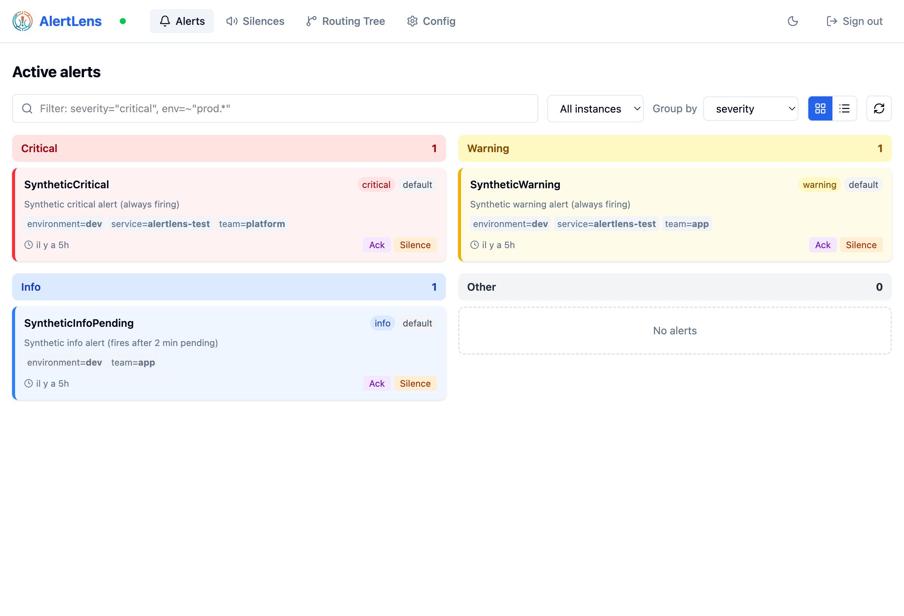

AlertLens¶
AlertLens is a lightweight, modern UI for Prometheus Alertmanager and Grafana Mimir that bridges the gap between alert visualization and configuration management.
Unlike read-only dashboards, AlertLens lets you understand, visualize, and act on the full alert lifecycle — all from a single, stateless binary.
Why AlertLens?¶
| Pain | AlertLens solution |
|---|---|
| Alertmanager's built-in UI is minimal | Rich Kanban/list view with filters and grouping |
| Silences require manual YAML knowledge | 1-click silence from any active alert |
| "Who is working on this?" is unclear | Visual Ack mechanism built on top of Alertmanager silences |
Editing alertmanager.yml is risky |
Validated diffs + GitOps push (GitHub / GitLab) |
| Managing multiple clusters is painful | Native multi-instance aggregation |
Key Features¶
-
Alert Visualization
Kanban or dense list view. Filter with Alertmanager's native matcher syntax. Group by any label. Aggregate across multiple instances.
-
1-Click Silences
Create silences directly from active alerts. Pre-filled matchers, human-friendly duration picker. Bulk silence for multi-alert selection.
-
Visual Ack
Acknowledge who is handling an alert. Stateless: powered by Alertmanager silences with reserved labels. No database required.
-
Configuration Builder
Edit the routing tree, receivers, and mute times with a guided UI. Live YAML preview and diff before save. Validate with the official Prometheus library.
-
GitOps Integration
Push
alertmanager.ymlchanges directly to GitHub or GitLab. Atomic writes with configurable commit messages and webhook triggers. -
Zero Dependencies
Single binary. Frontend embedded via
go:embed. No database, no state, no sidecar. Deploy with Docker or drop the binary.

Quick Start¶
Then open http://localhost:9000.
Compatibility¶
| Product | Support |
|---|---|
| Prometheus Alertmanager | Full (API v2) |
| Grafana Mimir (multi-tenant) | Full (X-Scope-OrgID per instance) |
| Alertmanager API v1 | Out of scope |
Architecture at a Glance¶
AlertLens is fully stateless. All state (silences, routes, alerts) lives in Alertmanager. AlertLens only reads and writes through the Alertmanager API v2.